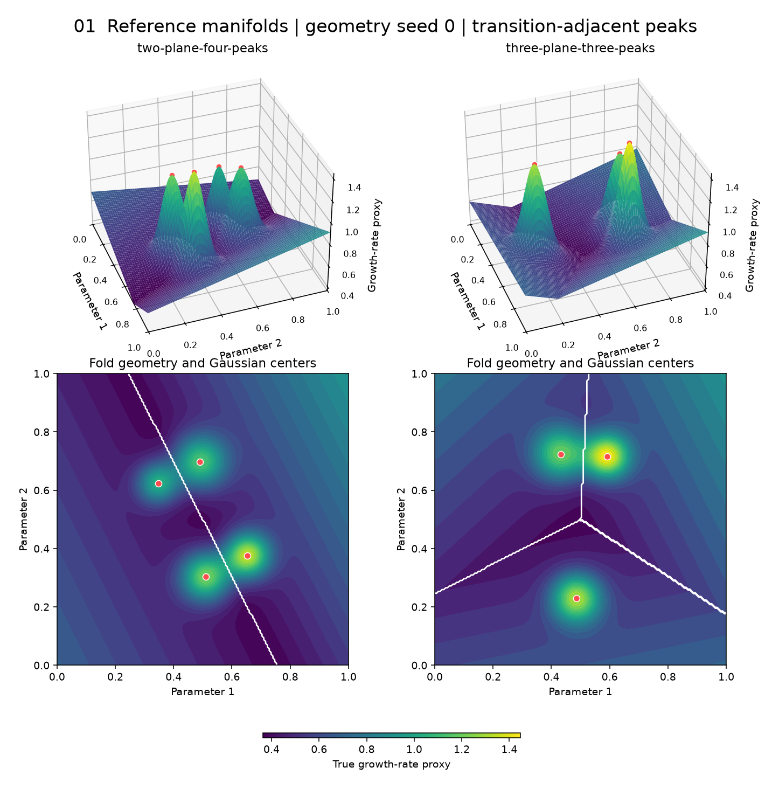
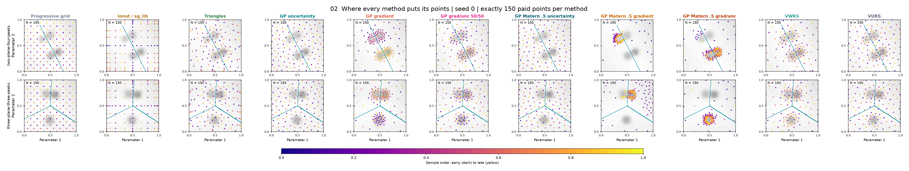
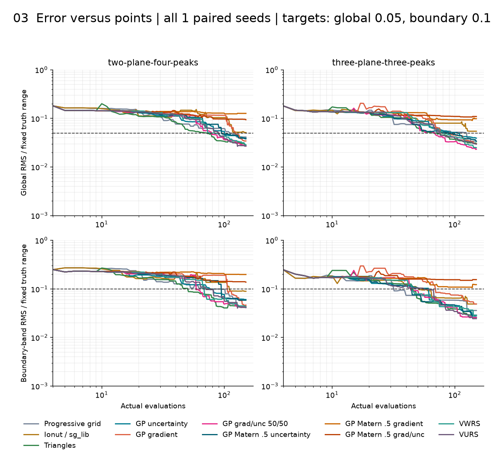
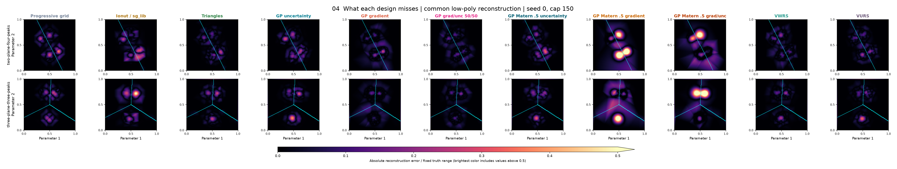
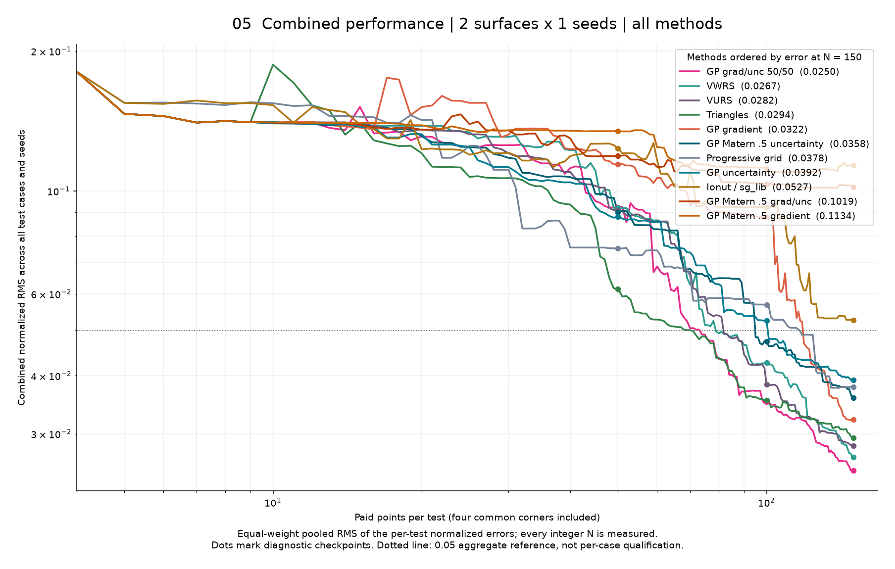
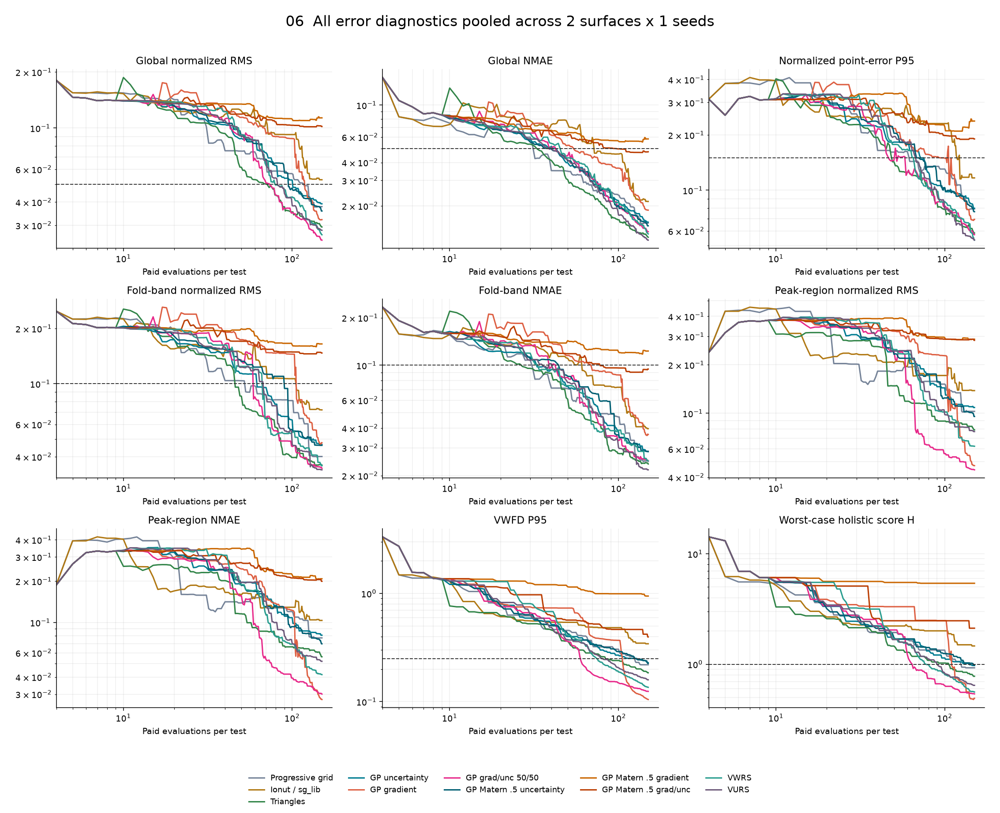

Start with the reference surfaces, compare the point placement, then judge error per evaluation. The placement maps show one seed; the error curves summarize all paired seeds.
Plot-reading guide · Detailed results · Saved data
Exact surfaces and plan views before sampling. White lines mark mode switches; red points mark Gaussian centers. The two-plane peaks straddle folds. In the three-plane case, two peaks compete across one fold and the third remains isolated inside its own mode.

Rows are test surfaces; columns are methods. Gray shading shows truth, teal marks the mode-switch boundary, and dots show sampled locations. These are final-cap snapshots of one paired seed, not averages. N includes the four shared corner evaluations; every method uses exactly the same number of points.

Each panel overlays all methods. Top: global RMS; bottom: boundary-band RMS. Lines are medians and shading is the interquartile spread across paired seeds/geometries, not confidence intervals. Both axes use identical limits in all panels. Curves require the complete paired seed set at each N. Dashed lines show the qualification targets. Lower and further left is better; placement alone is not a score.

The same row/column layout as the placement sheet, using the same seed and cap. Dark is accurate; bright is inaccurate. A single normalized color scale makes methods comparable. Values above 0.5 saturate at the brightest color. Cyan marks the true boundary.

One curve per method pools global normalized squared errors across every surface and seed, then takes the square root. All tests receive equal weight at the same paid point count. Fold-band and peak errors remain separate diagnostics, avoiding double counting. Lower is better. An aggregate target does not guarantee that every test passes; the per-case qualification table remains below.

Each subplot is one error type with all methods overlaid; cases and seeds are pooled instead of split into separate panels. RMS summaries use equal-weight pooled RMS, NMAE/P95/VWFD use equal-weight means, and H shows the worst case/seed. Dashed lines are declared targets; peak diagnostics have no qualification target. Lower and further left is better.

| Case | Progressive grid | Ionut / sg_lib | Triangles | GP uncertainty | GP gradient | GP grad/unc 50/50 | GP Matern .5 uncertainty | GP Matern .5 gradient | GP Matern .5 grad/unc | VWRS | VURS |
|---|---|---|---|---|---|---|---|---|---|---|---|
| two-plane-four-peaks | 1/1 seeds N = 125 | 0/1 seeds not qualified | 1/1 seeds N = 106 | 1/1 seeds N = 140 | 1/1 seeds N = 110 | 1/1 seeds N = 65 | 1/1 seeds N = 148 | 0/1 seeds not qualified | 0/1 seeds not qualified | 1/1 seeds N = 78 | 1/1 seeds N = 91 |
| three-plane-three-peaks | 1/1 seeds N = 124 | 0/1 seeds not qualified | 1/1 seeds N = 78 | 1/1 seeds N = 105 | 1/1 seeds N = 65 | 1/1 seeds N = 52 | 1/1 seeds N = 115 | 0/1 seeds not qualified | 0/1 seeds not qualified | 1/1 seeds N = 71 | 1/1 seeds N = 74 |